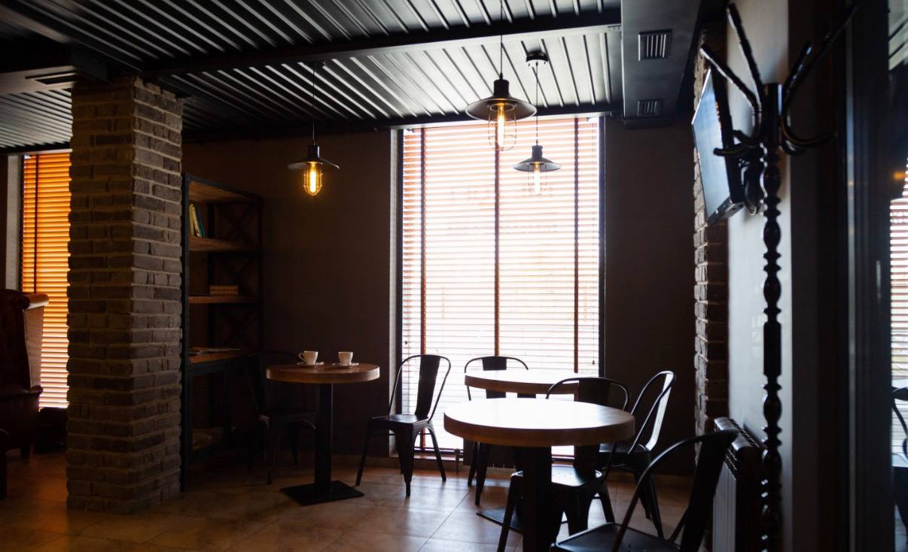

О нашем заведении
Добро пожаловать в мужской клуб и барбершоп Spirito Royal в Астане. Наша философия строится вокруг высокого качества мужских стрижек, безупречного бритья и уважения к традициям классического ухода за волосами. Мы создали атмосферу, где каждый гость может отвлечься от городского шума, насладиться зерновым кофе и доверить свой образ профессионалам.
Заведение открыло свои двери для ценителей точных стрижек и строгих линий. Мы регулярно совершенствуем технику, закупаем профессиональную мужскую косметику и гарантируем персональный подход к каждому гостю столицы.
Философия мастеров
«Качественная мужская стрижка — это не просто длина волос, а в первую очередь правильная геометрия формы головы, придающая уверенность на каждый день.»
— Шеф-барбер Азамат, интервью от .
Интерьер и атмосфера

В наших залах оборудованы комфортные кресла и зоны отдыха, соответствующие стандартам премиального сервиса.